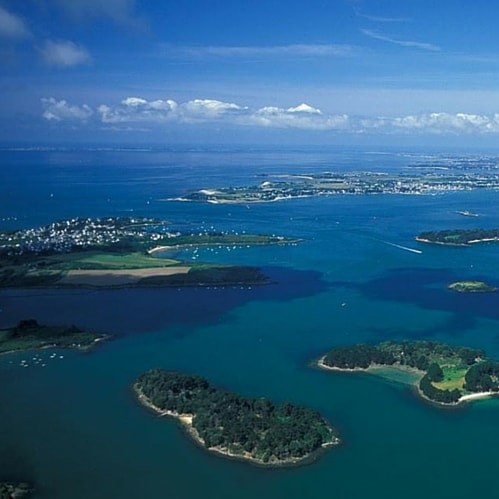
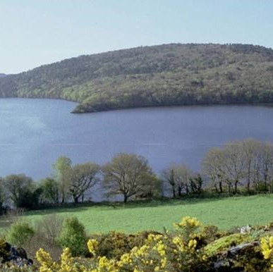

morbihan

Golfe Morbihan

Marais Salant
Marais Salant
×
Dans le département du Morbihan, vous pourrez aussi découvrir la Commune de Guérande. Sa spécialité, le sel de Guérande, est reconnu dans la France entière ! Le site tourisme-bretagne.fr vous propose de faire la visite des marais salant de guérande à vélo : “En selle pour le sel !”. Vous pourrez ainsi vous régaler en découvrant la grande variété de gourmandises où le sel de Guérande entre dans leur composition.

Lac de Guerlédan